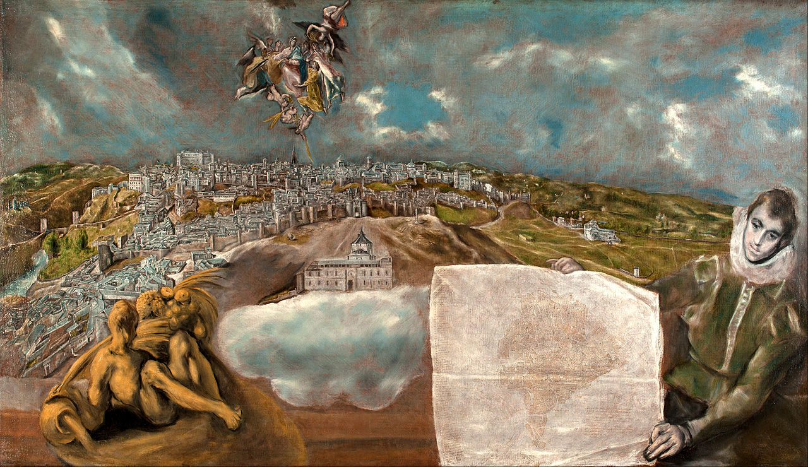
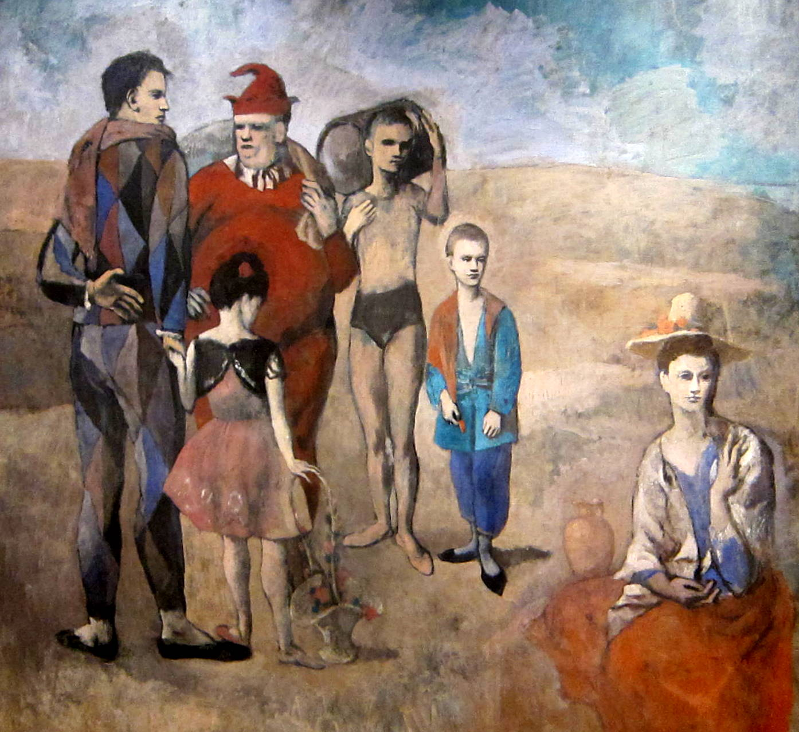
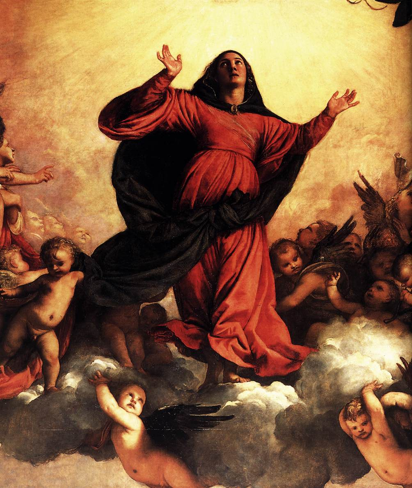

Malarskie krajobrazy Rilkego
Botticelli
Długo zwiedzałem dzieła sztuki we Florencji. Godzinami mogłem przesiadywać przed jakimś obrazem, by wyrobić sobie o nim zdanie, porównując je potem z pięknymi ocenami Burckhardta. Kiedyś zapomniałem stojąc przed Magnificat Botticellego i mych własnych określeń, i obcych formułek. I wtedy to się stało. Czułem się, jakbym stoczył bój i odniósł zwycięstwo… I ogarnęła mnie nieznana dotąd radość.
— Rilke na kartach Dziennika florenckiego, przeł. W. Markowska
Sandro Botticelli „Madonna del Magnificat” (detal), Uffizi, Florencja
Mantegna
Kiedy dotarliśmy do Werony, kazałam zatrzymać przed fasadą S. Zeno i poprowadziłam zdumionego poetę ku chórowi za głównym ołtarzem. Poddałam myśl, by przyjrzał się malowidłu Mantegni, widniejącemu ponad naszymi głowami.
W opustoszałym wnętrzu kościoła unosiła się lekka woń kadzideł. Wiedziałam, jak bardzo Rilke uwielbiał otoczenie pełne harmonii, kiedy recytowano wiersze. I tak, z drżącym sercem przeczytałam mu półgłosem jego włoską „Judytę”. Jakże się uradowałam, kiedy wyraził swe zadowolenie! Na zawsze pozostała dlań najmilszym spośród przekładów, na jakie się poważyłam.
— Marie von Thurn und Taxis Wspomnienie o Rainerze Marii Rilkem
Andrea Mantegna „Poliptyk San Zeno” (detal), ok. 1457-1460, Werona, Basilica di San Zeno
Cima da Conegliano
Pomnika nie stawiajcie. Niech różana
gałązka kwitnie dlań w corocznej chwale.
Bo to Orfeusz jest…
Znalezioną w Sierre reprodukcję rysunku Cimy da Conegliano, przedstawiającą Orfeusza, najwyższego boga poezji, Baladine Klossowska zawiesiła nad biurkiem Rilkego w jego gabinecie w Muzot.

Giovanni Batista Cima da Conegliano „Orfeo”, Gabinetto Disegni e Stampe degli Uffizi, Florencja
El Greco
Obejrzałem już liczne malowidła El Greca, niektóre wprawiły mnie w niekłamany podziw… Jego dzieła należy odbierać w zgoła odmiennym wymiarze wewnętrznym. Artysta zatraca się w tym, co istniejące, jest jedynie piękną klamrą, spinającą mocniej niezwykłą wizję z rzeczami, un cabochon énorme enchâssé, dans se terrible et sublime reliquaire, olbrzymim klejnotem wtopionym w ten straszliwy i wspaniały relikwiarz.
— Rilke w liście do Marie von Thurn und Taxis, Toledo, 13 XI 1912
El Greco „Vista de Toledo”, 1597-1610, Metropolitan Museum of Art
La Dame à la Licorne
Teraz już i gobelinów owej damy à la Licorne nie ma w starym zamku Boussac. Jest czas, kiedy wszystko znika z domów, a one nic już zatrzymać nie mogą.
Niebezpieczeństwo bardziej bezpieczne się stało niźli bezpieczeństwo. Nikt z pokolenia Dele Viste nie towarzyszy człowiekowi, nikt tego we krwi nie ma. Przeminęli wszyscy. Nikt nie wymawia imienia twego, Piotrze d’Aubusson, dostojny Wielki Mistrzu z prastarego rodu, za którego pono wolą tkane były te obrazy, co sławią wszystko, a nie porzucają nic…
— Rilke na kartach Maltego
Poeta jest również autorem wiersza Dama z jednorożcem, dedykowanego Stinie Frisell: „Na pamiątkę wspólnych wrażeń z odkrywania gobelinów szlachetnej damy z domu Le Viste w Hôtel de Cluny”.
Fragment tapiserii „Wzrok” z cyklu „Dama z jednorożcem” („La Dame à la Licorne”), Musée national du Moyen Age, Musée Cluny
Melozzo da Forlì
Podczas pobytu w Duino Rilke upodobał sobie nieduży buduar o bezpretensjonalnym wystroju, tchnący niezwykłym nastrojem intymności. Ściany pokryte były pięknymi, starymi materiami genueńskimi, które niemal niknęły pod obfitością sztychów, akwarel i pastelów. Wisiały na nich również fotografie wszelkiego formatu, zapełniając bez reszty niewielką przestrzeń pomiędzy malowidłami.
Jakże rozkoszne przeżywałam wieczory w moim niezwykłym pokoiku z chybotliwym fotelem, otoczona aniołami Melozza da Forlì, Primaverą i Pensieroso, Centaurem i Nimfą o wielkich oczach, przed obliczem łagodnej Madonny na złotym tle, w towarzystwie Kassnera, Horatio Browna i naszego Serafico.
— Marie von Thurn und Taxis w swym Wspomnieniu o Rainerze Marii Rilkem

Jeden z muzykujących aniołów, fresk Melozza da Forlì z apsydy Basilica dei Santi Apostoli, obecnie w zbiorach Pinakoteki Watykańskiej
Picasso – La famille des Saltimbanques
Lecz kimże są, powiedz, owi wędrowni linoskoczkowie,
ci nieco jeszcze szybciej niż my mijający, których od rana
urabia, komu, komu na uciechę
nigdy niesyta wola?
W Piątej elegii duinejskiej, w której podejmuje Rilke m.in. motyw ulicznych artystów, pojawiają się nawiązania do znanego obrazu Picassa „La famille des Saltimbanques” („Rodzina kuglarzy”). Poeta obejrzał to płótno w listopadzie 1914 roku w galerii Thannhausera w Monachium i wkrótce namówił swoją przyjaciółkę Herthę Koenig do jego zakupu. Malowidło zawisło w jej monachijskim mieszkaniu przy Widenmayerstraße, gdzie Rilke mógł je do woli kontemplować.
Pablo Picasso „La famille des Saltimbanques”, 1905, National Gallery of Art w Waszyngtonie
Picasso – Les Baladins
W grudniu roku 1914 w Berlinie zobaczył Rilke u Marianne Mitford malowidło Picassa „Les Baladins”. Reprodukcja tego obrazu będzie przez cały okres wojny stać na biurku poety w jego monachijskim mieszkaniu.
Inni jesteśmy, zmienieni w Równych: każdemu
w pierś już niewłasną wskoczyło jak meteor serce.
Żarzące się serce żelazne z żelaznego wszechświata…
— pisze poeta w wierszu Pięć pieśni. Sierpień 1914.
Pablo Picasso „Mère et enfant” („Les Baladins”), 1905, Staatsgalerie, Stuttgart
Tycjan
Jakąż radość przyniosło nam powtórne spotkanie z tymi wszystkimi rzeczami, tak drogimi naszemu sercu, rzeczami, o które drżeliśmy przez te lata wojny! Sta. Maria Gloriosa pędzla Tycjana, teraz znów na swoim miejscu nad głównym ołtarzem kościoła Frari, budziła nieopisane wrażenie. Unosząc się ku niebiosom, opromieniona jasnym światłem, jakiż tworzyła kontrast z zimną i duszną atmosferą Akademii!
— Marie von Thurn und Taxis w swym Wspomnieniu o ponownym spotkaniu z Rilkem w Wenecji w roku 1920
Tycjan „Assunta” (detal), 1518, Wenecja, Santa Maria Gloriosa dei Frari
Cézanne
Jak niemanierycznie odmienne są te obrazy, jak bardzo pozbawione troski o oryginalność, przepełnione pewnością, by każdym zbliżeniem do tysiącrakiej natury nie zagubić się, a raczej, by wobec różnorodności zewnętrznego świata, poważnie i sumiennie odkrywać niewyczerpane bogactwo własnego wnętrza.
— Rilke w Listach o Cézannie (przeł. B. Antochewicz)

Paul Cézanne „Martwa natura z jabłkami”, 1871, Staatliche Museen zu Berlin, Gemäldegalerie, Berlin